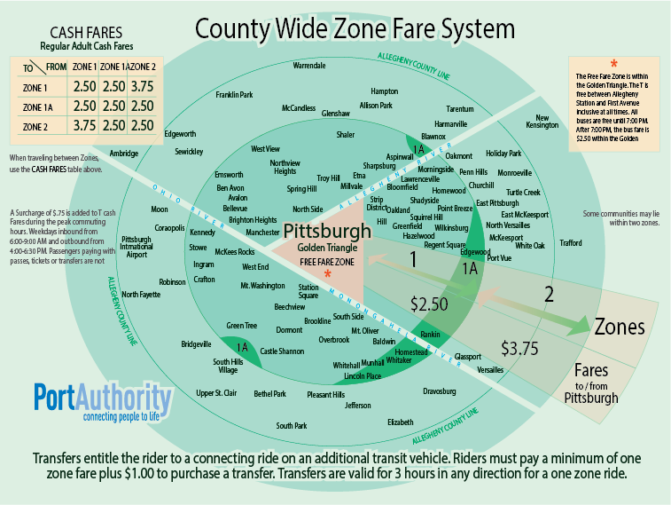

Zones
Fare Zones Overview
Port Authority operates a zone-based fare structure. The amount of fare is based on trip length originating from Downtown Pittsburgh. Higher fares are paid for trips crossing more than one zone.

Port Authority‘s system consists of:
- A Free Fare Zone which includes Downtown Pittsburgh on the bus and Downtown/North Shore on the T light rail system
- Two primary fare zones outside Downtown – Zone 1 and Zone 2 – and a small overlap zone, Zone 1A, in limited areas.
- Downtown Pittsburgh: First Avenue Station, Steel Plaza, Wood Street Station and Gateway
- North Shore: North Side Station and Allegheny Station
- The Allegheny River
- The Monongahela River
- Ross Street, Penn Station and Liberty Avenue at the railroad overpass and 11th Street
Trips that begin and end within the same zone are charged a one-zone fare, with the exception of trips taken entirely within the Free Fare Zone.
Fare Free Zone
The Free Fare Zone was established to promote the use of transit within Downtown Pittsburgh, encourage intramodal transfer and reduce boarding delays.
T Free Fare Zone
Rides within the T‘s Free Fare Zone are free at all times. The zone includes the following stations:
Free rides to North Shore stations are provided thanks to sponsorship agreements with the Pittsburgh Steelers, Rivers Casino, ALCO Parking and the Stadium Authority of the City of Pittsburgh.
Bus Free Fare Zone
For the bus, the Free Fare Zone is defined by the following boundaries:
For bus riders, fares are free within this zone from start of service until 7:00 p.m., seven days a week.
Zone 1
Zone 1 is the closest fare zone to Downtown Pittsburgh. Riders traveling within Zone 1 or between Zone 1 and Downtown Pittsburgh/Zone 1A pay a one-zone fare, $2.50 for adult full fare. Riders traveling from between Zone 1 and Zone 2 pay a two-fare fare, $3.75 for adult full fare.
Zone 1A
Zone 1A is an overlap zone between Zones 1 and 2. It is limited to certain areas in Wilkinsburg/the east suburbs, the Mon Valley, the Waterworks and the Kane Center in Scott Township (see map). Riders traveling between Zone 1A and any other zone pay a one-zone fare, $2.50 for adult full fare.
Zone 2
Zone 2 encompasses the area between the Zone 1A boundary and the remainder of the service area. Riders traveling between Zone 2 and Zone 1/Downtown Pittsburgh pay a two-zone fare, $3.75 for adult full fare. Riders traveling within Zone 2 or between Zone 2 and Zone 1A pay a one-zone fare, $2.50 for adult full fare.